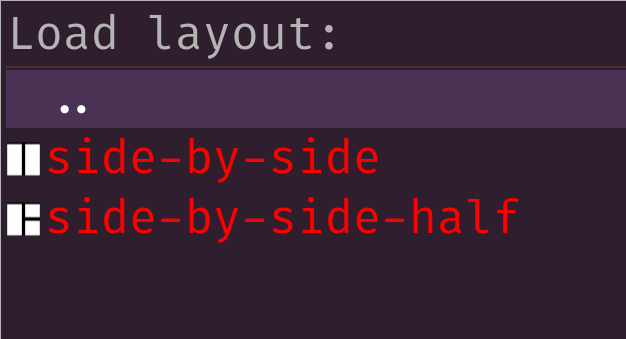

🌿 herbie 🌿
A herbstluftwm interactive environment thingy.
Table of Contents
Intro
herbie is persistent helper for adding behavior to herbstluftwm by reacting to keybindings and interacting via rofi.
Documentation
You are reading it. This file is it. You can see it rendered in the herbie's github repo or more beautifully by Emacs with the help of fniessen's ReadTheOrg on herbie's github pages.
Installation
herbie installs in the usual Python ways. Direct from GitHub:
uv tool install git+https://github.com/brettviren/herbie
Or from PyPi
uv tool install herbstluft-herbie
Note, the project named herbie on PyPI is not related to this herbie.
Usage
$ herbie hooks
Run with no arguments to get help on log and config files and if herbie needs
help to find herbstclient.
Hooks
Once started, herbie is long-running process that reacts to information from herbstluftwm "hooks". herbie can react to standard hooks and custom hooks. For example,
$ herbstclient emit_hook window_jump_tag
Or, when herbstlufwm restarts, it emits the restart hook and herbie will react
by restarting itself. Every hook is handled by a method in the Herbie class of
hte same name. See that class for a definitive list but here are some of the
existing hook handlers:
window_jump_tag- opens a rofi menu for jumping to a window in the current tag.
window_jump_any- as above but include all windows across tabs.
window_menu- open a menu on current window to apply some operation (close, minimize, toggle some property like floating or fullscreen).
layout_{drop,save,load}- open a menu to operate on layouts (see below)
task_{start,clear}- open a menu to operate on tasks (see below).
Many of the hooks that herbie reacts to are most conveniently emitted via a key
binding. Here is a snippet of ~/.config/herbstluftwm/autostart that shows some
examples:
# emit to herbie hc keybind $Mod-n emit_hook window_jump_tag hc keybind $Mod-Shift-n emit_hook window_jump_any hc keybind $Mod-w emit_hook window_menu # k for kill hc keybind $Mod-k emit_hook layout_drop # capital-K for "keep"? hc keybind $Mod-Shift-k emit_hook layout_save # y for yank hc keybind $Mod-y emit_hook layout_load hc keybind $Mod-i emit_hook task_start hc keybind $Mod-Shift-i emit_hook task_clear
Layouts
A "layout" is a description of how herbstluftwm places windows in a tag. For example, you may see the layout of your current tag with:
$ herbstclient dump (split horizontal:0.5:0 (clients grid:0 0x120000e) (clients grid:0 0x3c00142))
herbie has support for managing a persistent store of layouts and applying them. It does this by presenting the user with a rofi menu in response to the layout_{drop,save,load} hooks.
The menu items include the layout name as well as a little icon that herbie generates to show the geometry of the window outlines. Here is an example:

Layouts are saved in:
~/.config/herbie/layouts/<tag>/<name>.layout
The user may create or edit these files by hand but perhaps it is easiest to configure a layout via herbstluftwm and then save it.
Layouts from herbstclient dump include a window ID number and these may appear
in .layout files. This window ID is ignored by herbie.
Tasks
Tasks are like layouts with added support for starting applications. The term "task" refers to setting up a space for a user, and not herbie, to perform tasks. Tasks are configured through the herbie config file
~/.config/herbie/herbie.cfg
A task is specified in a form similar to a herbstluftwm layout but the (clients) form supports an additional window:<name> field. It specifies an application that should exist in the herbstluftwm frame. This is most clear with an example:
[window firefox-rss]
title = Mozilla Firefox
command = firefox -P rss-profile
[window liferea]
class = Liferea
command = liferea
[tasks]
rss = (split horizontal:0.75:1
(clients window:firefox-rss)
(split vertical:0.50:0
(clients window:liferea)
(clients )))
Each [window <name>] gives a command to run to populate the frame while the class or title gives string that is used to match these client attributes as may be found with, for example:
herbstclient attr clients.<window-id>.{title,class}
When task_start hook is received, herbie will present a rofi menu with all known tasks. Selecting one will create a tag with that task, assure the configured applications are present and following the layout and make that tag current. If the tag already exists, herbie will simply make it become the current tag.
The result is an automatically and repeatably populated tag.
{kind=link}
See also
- https://herbstluftwm.org/ of course.
- A random collection of tips and tricks to use herbsluftwm.
Todo
[ ]Layouts should be definable inherbie.cfgand that set should be a union of what is manged inlayouts/.[ ]The task layout should be considered without needing to be redefined explicitly as a layout.[ ]herbsluftwm 0.9.6 adds a--binary-pipewhich allows to send multiple commands through a single herbstclient instance. A few of herbie's reactions invoke a sequence of herbstclient calls and they may benefit from this feature.